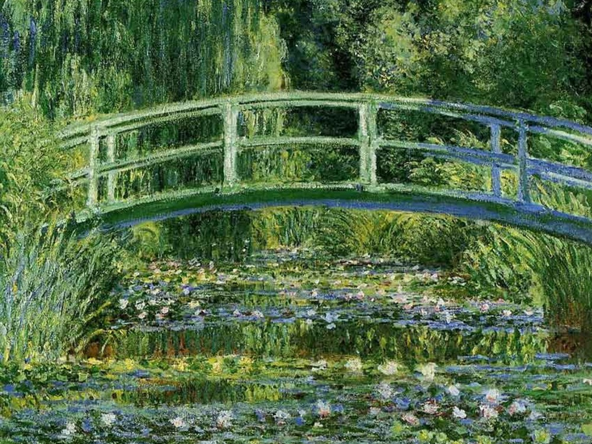
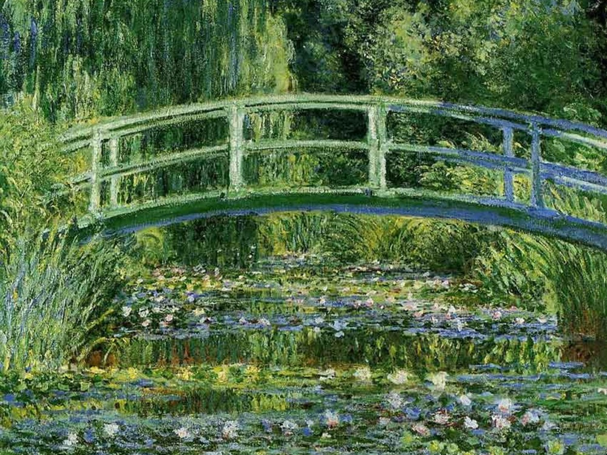

Claude Monet (1840-1926) fue un pintor francés considerado uno de los fundadores del impresionismo, un movimiento
artístico que buscaba capturar la impresión o sensación visual que produce una escena en lugar de representarla de
manera realista. Monet es conocido por sus series de pinturas al aire libre que capturan la luz y el color de la
naturaleza, especialmente de los paisajes y los jardines.
Monet comenzó su carrera artística en la década de 1860 y rápidamente se convirtió en uno de los líderes del movimiento
impresionista. En lugar de seguir las técnicas académicas tradicionales, Monet prefirió trabajar al aire libre y
capturar la atmósfera y la luz del momento.
Sus primeras pinturas impresionistas, como "Impresión, sol naciente" (1872), fueron criticadas en su momento por su
falta de claridad y precisión, pero eventualmente fueron aceptadas como obras de arte innovadoras.
A lo largo de su carrera, Monet se enfocó en la exploración de la luz y el color, y cómo estos elementos pueden ser
utilizados para evocar emociones y sensaciones. Sus pinturas de la catedral de Rouen, por ejemplo, muestran cómo la luz
cambia a lo largo del día y cómo esto afecta la apariencia de la estructura. Además de la naturaleza y la arquitectura,
Monet también pintó retratos y escenas cotidianas.
 

PRUEBA A DESLIZAR LA IMAGEN
La influencia de Monet en el mundo del arte es evidente en la popularidad continua de su obra. Sus pinturas son muy
valoradas y se han vendido por millones de dólares en subastas. Además, su enfoque en la captura de la impresión visual
y su experimentación con la luz y el color influyeron en la evolución del arte moderno en el siglo XX. Monet es
considerado uno de los artistas más importantes e innovadores de la historia del arte y su legado continúa inspirando a
artistas en todo el mundo.
Aquí te dejo algunas curiosidades sobre Claude Monet :
- A los 16 años, Monet vendió su primer dibujo por una pequeña cantidad de dinero.
- Monet estuvo en el ejército francés durante un breve periodo de tiempo.
- Durante su vida, Monet pintó más de 2.500 obras de arte, muchas de las cuales se encuentran en museos de todo el mundo.
- Monet es considerado uno de los fundadores del impresionismo, un movimiento artístico que se caracterizaba por
representar las impresiones visuales del mundo exterior en lugar de representar formas realistas y precisas.
- La famosa pintura de Monet, "Impresión, sol naciente", dio nombre al movimiento impresionista.